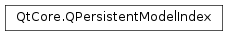

QPersistentModelIndex¶
Synopsis¶
Functions¶
- def
__eq__(other) - def
__eq__(other) - def
__lt__(other) - def
__ne__(other) - def
__ne__(other) - def
child(row, column) - def
column() - def
data([role=Qt.DisplayRole]) - def
flags() - def
internalId() - def
internalPointer() - def
isValid() - def
model() - def
operator=(other) - def
parent() - def
row() - def
sibling(row, column) - def
swap(other)
Detailed Description¶
The
PySide2.QtCore.QPersistentModelIndexclass is used to locate data in a data model.A
PySide2.QtCore.QPersistentModelIndexis a model index that can be stored by an application, and later used to access information in a model. Unlike thePySide2.QtCore.QModelIndexclass, it is safe to store aPySide2.QtCore.QPersistentModelIndexsince the model will ensure that references to items will continue to be valid as long as they can be accessed by the model.It is good practice to check that persistent model indexes are valid before using them.
-
class
PySide2.QtCore.QPersistentModelIndex¶ -
class
PySide2.QtCore.QPersistentModelIndex(index) -
class
PySide2.QtCore.QPersistentModelIndex(other) Parameters: - index –
PySide2.QtCore.QModelIndex - other –
PySide2.QtCore.QPersistentModelIndex
Creates a new
PySide2.QtCore.QPersistentModelIndexthat is a copy of the modelindex.Creates a new
PySide2.QtCore.QPersistentModelIndexthat is a copy of theotherpersistent model index.- index –
-
PySide2.QtCore.QPersistentModelIndex.child(row, column)¶ Parameters: - row –
PySide2.QtCore.int - column –
PySide2.QtCore.int
Return type: Use
QAbstractItemModel.index()instead.Returns the child of the model index that is stored in the given
rowandcolumn.- row –
-
PySide2.QtCore.QPersistentModelIndex.column()¶ Return type: PySide2.QtCore.intReturns the column this persistent model index refers to.
-
PySide2.QtCore.QPersistentModelIndex.data([role=Qt.DisplayRole])¶ Parameters: role – PySide2.QtCore.intReturn type: object Returns the data for the given
rolefor the item referred to by the index.See also
Qt.ItemDataRoleQAbstractItemModel.setData()
-
PySide2.QtCore.QPersistentModelIndex.flags()¶ Return type: PySide2.QtCore.Qt.ItemFlagsReturns the flags for the item referred to by the index.
-
PySide2.QtCore.QPersistentModelIndex.internalId()¶ Return type: PySide2.QtCore.quintptrReturns a
quintptrused by the model to associate the index with the internal data structure.
-
PySide2.QtCore.QPersistentModelIndex.internalPointer()¶ Return type: voidReturns a
void*pointer used by the model to associate the index with the internal data structure.
-
PySide2.QtCore.QPersistentModelIndex.isValid()¶ Return type: PySide2.QtCore.boolReturns
trueif this persistent model index is valid; otherwise returnsfalse.A valid index belongs to a model, and has non-negative row and column numbers.
-
PySide2.QtCore.QPersistentModelIndex.model()¶ Return type: PySide2.QtCore.QAbstractItemModelReturns the model that the index belongs to.
-
PySide2.QtCore.QPersistentModelIndex.__ne__(other)¶ Parameters: other – PySide2.QtCore.QModelIndexReturn type: PySide2.QtCore.boolReturns
trueif this persistent model index does not refer to the same location as theothermodel index; otherwise returnsfalse.
-
PySide2.QtCore.QPersistentModelIndex.__ne__(other) Parameters: other – PySide2.QtCore.QPersistentModelIndexReturn type: PySide2.QtCore.boolReturns
trueif this persistent model index is not equal to theotherpersistent model index; otherwise returnsfalse.
-
PySide2.QtCore.QPersistentModelIndex.__lt__(other)¶ Parameters: other – PySide2.QtCore.QPersistentModelIndexReturn type: PySide2.QtCore.boolReturns
trueif this persistent model index is smaller than theotherpersistent model index; otherwise returnsfalse.All values in the persistent model index are used when comparing with another persistent model index.
-
PySide2.QtCore.QPersistentModelIndex.operator=(other) Parameters: other – PySide2.QtCore.QModelIndexReturn type: PySide2.QtCore.QPersistentModelIndexSets the persistent model index to refer to the same item in a model as the
othermodel index.
-
PySide2.QtCore.QPersistentModelIndex.__eq__(other)¶ Parameters: other – PySide2.QtCore.QPersistentModelIndexReturn type: PySide2.QtCore.boolReturns
trueif this persistent model index is equal to theotherpersistent model index; otherwise returnsfalse.All values in the persistent model index are used when comparing with another persistent model index.
-
PySide2.QtCore.QPersistentModelIndex.__eq__(other) Parameters: other – PySide2.QtCore.QModelIndexReturn type: PySide2.QtCore.boolReturns
trueif this persistent model index refers to the same location as theothermodel index; otherwise returnsfalse.All values in the persistent model index are used when comparing with another model index.
-
PySide2.QtCore.QPersistentModelIndex.parent()¶ Return type: PySide2.QtCore.QModelIndexReturns the parent
PySide2.QtCore.QModelIndexfor this persistent index, or an invalidPySide2.QtCore.QModelIndexif it has no parent.
-
PySide2.QtCore.QPersistentModelIndex.row()¶ Return type: PySide2.QtCore.intReturns the row this persistent model index refers to.
-
PySide2.QtCore.QPersistentModelIndex.sibling(row, column)¶ Parameters: - row –
PySide2.QtCore.int - column –
PySide2.QtCore.int
Return type: Returns the sibling at
rowandcolumnor an invalidPySide2.QtCore.QModelIndexif there is no sibling at this position.- row –
-
PySide2.QtCore.QPersistentModelIndex.swap(other)¶ Parameters: other – PySide2.QtCore.QPersistentModelIndexSwaps this persistent modelindex with
other. This function is very fast and never fails.
© 2018 The Qt Company Ltd. Documentation contributions included herein are the copyrights of their respective owners. The documentation provided herein is licensed under the terms of the GNU Free Documentation License version 1.3 as published by the Free Software Foundation. Qt and respective logos are trademarks of The Qt Company Ltd. in Finland and/or other countries worldwide. All other trademarks are property of their respective owners.